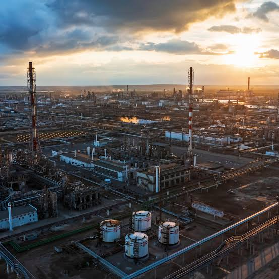

03 / DOWN · یادداشت Energy Notes
پالایشگاه چرا نفت کوره تولید میکند؟
روایتی از گزارش مرکز پژوهشهای مجلس دربارهٔ سهم بالای نفت کوره در پالایشگاههای ایران؛ مسئلهای که از جنس نفت خام شروع میشود و به خوراک، فناوری و تأمین مالی میرسد.

مسئله از تهماندهٔ پالایشگاه شروع میشود
در تصویر، یک مجموعهٔ پالایشگاهی زیر نور غروب آرام به نظر میرسد؛ برجها، خطوط لوله و مخازن کنار هم کار میکنند و شعلهٔ کوچکی در دوردست دیده میشود. اما ارزش یک پالایشگاه فقط به مقدار نفت خامی که وارد آن میشود بستگی ندارد. پرسش مهمتر این است که این خوراک با چه ترکیبی از بنزین، گازوئیل، سوخت جت، نفتا و محصولات سنگین بیرون میآید.
نفت کوره سنگینترین بخش این سبد است. تولید آن بهخودیخود نشانهٔ خرابی پالایشگاه نیست، اما سهم بالا معمولاً یعنی بخشی از خوراک به محصولی با ارزش افزوده و بازارپذیری محدودتر تبدیل شده است. گزارش «مسائل راهبردی بخش انرژی در برنامه هفتم توسعه (۲)» که در ۵ تیر ۱۴۰۲ منتشر شده، مسئله را از همینجا دنبال میکند: چرا پالایشگاههای ایران نفت کورهٔ زیادی تولید میکنند و برای کمکردن آن باید سراغ کدام اهرم رفت؟
عدد ۲۳ درصد چه میگوید؟
قانون اصلاح الگوی مصرف انرژی مصوب ۱۳۸۹ هدفی روشن گذاشته بود: سهم تولید نفت کوره در پالایشگاهها باید با کاهش حداقل دو واحد درصدی، ظرف ۱۵ سال به حداکثر ۱۰ درصد نفت خام تحویلی برسد. گزارش، با وجود گذشت بیش از ۱۲ سال از تصویب قانون، میانگین سهم نفت کوره در پالایشگاههای نفت خام ایران را حدود ۲۳ درصد میداند. این فاصله فقط یک عقبماندگی عددی نیست؛ فاصلهٔ میان هدف سیاستی و توان واقعی پالایشگاه برای تغییر سبد محصول است.
مسئله وقتی روشنتر میشود که نفت کوره را تنها جدا از بقیهٔ محصولات سنگین نبینیم. در بیشتر پالایشگاهها، کاهش نفت کوره با افزایش وکیومباتوم و قیر همراه شده است. بنابراین میزان کل محصولات تهماندهٔ سنگین، یعنی نفت کوره، وکیومباتوم و قیر، در هشت سال مورد بررسی گزارش فقط از حدود ۳۱٫۱۴ درصد به ۲۹٫۱۲ درصد رسیده است. بخشی از محصول از یک نام به نام دیگر رفته، اما هنوز در انتهای زنجیرهٔ پالایش باقی مانده است.
این نکته مرز میان «کاهش نفت کوره» و «کاهش تولید محصولات سنگین» را نشان میدهد. اگر پالایشگاه فقط نفت کوره را به محصول سنگین دیگری تبدیل کند، فشار بازار و نیاز به ارتقای واقعی از بین نمیرود. هدف اصلی باید تغییر ترکیب سبد پالایش و افزایش سهم برشهای سبک و میانتقطیر باشد.
بازار جهانی صبر نمیکند
برای نفت کورهٔ پرگوگرد، مسئله فقط قیمت پایین نیست. سازمان بینالمللی دریانوردی در فاصلهٔ سالهای ۲۰۰۰، ۲۰۱۲ و ۲۰۲۰ استانداردهای سختگیرانهتری برای گوگرد سوخت دریایی تعیین کرد. سقف گوگرد از ۴٫۵ درصد در استاندارد سال ۲۰۰۰ به ۳٫۵ درصد در ۲۰۱۲ و ۰٫۵ درصد در ۲۰۲۰ رسید. همزمان، دادههایی که گزارش از EIA نقل میکند از کاهش حدود ۴۰ درصدی تقاضای جهانی انواع نفت کوره بین سالهای ۲۰۰۰ تا ۲۰۲۰ خبر میدهد.
این اعداد مربوط به بازهٔ بررسی همان گزارشاند، نه پیشبینی وضعیت امروز بازار. اما جهت مسئله را خوب نشان میدهند: پالایشگاهی که نفت کورهٔ پرگوگرد زیادی تولید میکند، با بازاری روبهروست که هم استاندارد آن سختتر شده و هم بخشی از مصرفش به گازوئیل، گاز طبیعی و سوخت دریایی کمگوگرد منتقل شده است. نفت کورهٔ باکیفیتتر را میتوان برای بازارهای مشخص حفظ کرد، ولی محصول سنگین و پرگوگرد دیگر راه سادهای برای فروش ندارد.
این فشار بازار و تغییر مسیرهای تجارت را نمیتوان جدا از ژئوپلیتیک نفت و گاز خواند؛ محصول پالایشگاه در بازاری فروخته میشود که استاندارد، مسیر انتقال و تصمیم سیاسی روی آن اثر میگذارند.
دو راه برای سبکترکردن سبد پالایش
گزارش دو مسیر اصلی را کنار هم میگذارد. مسیر اول، سرمایهگذاری در واحدهای ارتقای تهمانده است؛ یعنی تبدیل بخش سنگین به محصولات سبکتر یا تصفیهٔ آن برای رساندن گوگرد به سطح قابل قبول. مسیر دوم، تغییر سبد نفت خام مصرفی پالایشگاه است تا از ابتدا خوراکی وارد واحد شود که ظرفیت بیشتری برای تولید بنزین و گازوئیل دارد.
این دو راه جای هم را کاملاً نمیگیرند. فناوری میتواند محدودیت خوراک را جبران کند، اما زمان و سرمایهٔ زیادی میخواهد. خوراک سبکتر میتواند سریعتر نتیجه بدهد، اما به دسترسی پایدار، کیفیت مناسب و هماهنگی میان تولیدکنندهٔ خوراک و پالایشگاه نیاز دارد.
فناوری، از ویسبریکینگ تا تبدیل عمیق
هر پالایشگاه با یک پیکربندی ساخته میشود. پالایشگاههای سادهتر بیشتر بر تقطیر و تصفیهٔ برشهای سبک تکیه دارند. در پالایشگاههای پیچیدهتر، واحدهایی مانند ککسازی تأخیری، کراکینگ کاتالیستی بستر سیال، تصفیهٔ هیدروژنی و هیدروکراکینگ، تهمانده را به محصولاتی با ارزش بالاتر نزدیک میکنند.
مقایسهٔ گزارش از پالایشگاههای جهان یک رابطهٔ قابل فهم نشان میدهد: هرچه ظرفیت فرایندهای تبدیل عمیق بیشتر باشد، تولید نفت کوره کمتر است. در مقابل، افزایش ظرفیت ویسبریکینگ میتواند تولید نفت کوره را بالا ببرد؛ چون این فرایند بیشتر برای کاهش گرانروی و آمادهسازی تهمانده به کار میرود، نه برای تبدیل کامل آن به برشهای سبک.
گزارش میگوید در ایران بیشترین ظرفیت ارتقای تهمانده به ویسبریکینگ مربوط است و ظرفیت ککسازی تأخیری عملاً وجود ندارد. واحدهای ارتقای شازند توانستهاند با افزایش تولید وکیومباتوم و قیر، سهم نفت کوره را پایین بیاورند، اما این تجربه بهتنهایی به معنی حل مسئلهٔ محصولات سنگین نیست. برآوردی که گزارش از وزارت نفت نقل میکند، برای ارتقای کیفی و کاهش نفت کوره در پالایشگاهها حدود ۱۰ میلیارد دلار سرمایهگذاری لازم میداند؛ برآوردی متعلق به زمان تهیهٔ گزارش که با اجرای کامل طرحها میتوانست سهم نفت کوره را به کمتر از ۱۰ درصد خوراک برساند.
انتخاب فناوری هم ساده نیست. هیدروکراکینگ محصول سبکتری میدهد، اما هزینهٔ سرمایهگذاری و نیاز آن به هیدروژن بالاست. RFCC یا کراکینگ کاتالیستی تهمانده میتواند به تولید بنزین و پروپیلن کمک کند، ولی فلزات سنگین موجود در تهماندهٔ پالایشگاههای ایران استفادهٔ مستقل از آن را دشوار میکند. به همین دلیل، گزارش بر ترکیب تصفیهٔ هیدروژنی با فرایندهای تبدیل یا استفاده از گزینههایی مانند استخراج با حلال در کنار FCC/RFCC تأکید دارد. راهحل فنی باید با کیفیت خوراک، بازار محصول، سرمایه و توان تأمین فناوری همخوان باشد.
چرا تغییر خوراک ممکن است سریعتر جواب بدهد؟
تغییر خوراک از این نظر جذاب است که لازم نیست همهٔ واحدهای پالایشگاه از نو ساخته شوند. نفت خام سبکتر، بهطور طبیعی برشهای سبک بیشتری میدهد و تهماندهٔ کمتری بر جای میگذارد. در سبد خوراک پالایشگاههای ایران، نفت خام متوسط غالب است و سهم نفت سبک اندک است. گزارش این ترکیب را یکی از دلایل طبیعی سهم بالای محصولات سنگین میداند، در کنار محدودیت فناوری و اجرا نشدن برخی پروژههای ارتقا.
این تغییر البته به معنای خرید هر نفت سبک موجود نیست. نقطهٔ ریزش، مرکاپتان، خوردگی، سازگاری با واحدهای موجود و هزینهٔ انتقال باید بررسی شود. خوراکی که روی کاغذ سبکتر است، اگر با واحدهای پالایشگاه سازگار نباشد، میتواند هزینهٔ تازهای به زنجیره تحمیل کند.
میعانات گازی؛ راهی سریع با یک شرط فنی
گزارش، استفاده از میعانات گازی برای اختلاط با نفت خام را سریعترین راهکار سیاستی معرفی میکند. برآورد گزارش این است که ایران بهطور متوسط روزانه حدود ۷۳۰ هزار بشکه میعانات گازی تولید میکند و حدود ۱۵۰ هزار بشکه از آن، با مدیریت و تخصیص مناسب، میتواند در اختیار پالایشگاهها قرار بگیرد. پالایشگاههای شیراز و لاوان نمونههایی هستند که گزارش برای این مسیر به آنها اشاره میکند.
در یک محاسبهٔ نمونهٔ گزارش، اختلاط ۱۵ درصد میعانات گازی با خوراک نفت خام سهم نفت کوره را ۴٫۷۳ واحد درصد کم میکند، سهم بنزین را ۷٫۶۸ واحد درصد بالا میبرد و سود ناخالص پالایشگاه را بهازای هر بشکه ۱٫۱۶ دلار افزایش میدهد. این اعداد نتیجهٔ یک سناریوی فنی و اقتصادی در گزارشاند، نه تضمین عملکرد همهٔ پالایشگاهها یا همهٔ انواع میعانات.
کیفیت میعانات در این تصمیم تعیینکننده است. مقدار بالای مرکاپتان میتواند خوردگی و محدودیت عملیاتی ایجاد کند و گاهی میعانات باید پیش از اختلاط گوگردزدایی یا مرکاپتانزدایی شود. بنابراین «سبککردن خوراک» یک دستور کلی نیست؛ باید برای هر پالایشگاه، کیفیت میعانات، ظرفیت واحدها و سقف اختلاط جداگانه سنجیده شود. هماهنگی میان شرکت ملی نفت، شرکت ملی گاز، شرکت ملی پالایش و پخش و بخش برنامهریزی وزارت نفت نیز بخشی از خود راهکار است.
سواپ نفت سبک چه چیزی را حل میکند؟
مسیر دوم تغییر خوراک، سواپ نفت خام سبک از کشورهای مستقل مشترکالمنافع یا CIS است. نفتهایی مانند CPC و Azeri Light در مقایسه با نفت متوسط غالب در سبد ایران، میتوانند سهم برشهای سبک را بالا ببرند و تولید نفت کوره را پایین بیاورند. گزارش به خط لولهٔ ۳۲ اینچ نکا به ری اشاره میکند که با ظرفیت انتقال حدود ۵۰۰ هزار بشکه در روز، امکان رساندن نفت خام آسیای میانه به پالایشگاههای تهران و تبریز را فراهم کرده است.
در محاسبهٔ نمونهٔ گزارش برای تصفیهٔ نفت CPC در پالایشگاههای کشور، سبد محصول به سمت بنزین و برشهای سبکتر حرکت میکند و سود ناخالص افزایش مییابد. اهمیت این پیشنهاد فقط در عددهای جدول نیست. سواپ میتواند همزمان یک تصمیم فنی برای خوراک، یک تصمیم اقتصادی برای حاشیهٔ پالایش و یک ابزار دیپلماسی انرژی باشد. البته کیفیت نفت، نقطهٔ ریزش، مرکاپتان، مسیر انتقال و تغییرات لازم در واحدهای تقطیر، نمکزدایی و بازیافت گوگرد باید پیش از اجرا بررسی شوند.
پروژههای ارتقا بدون مدل مالی جلو نمیروند
واحدهای گوگردزدایی و تبدیل تهمانده سرمایهبرند و بازگشت سرمایهٔ آنها به قیمت خوراک، قیمت محصول، هزینهٔ هیدروژن، بازار کک و استانداردهای زیستمحیطی وابسته است. اگر پالایشگاه نفت کوره را با قیمت پایین بفروشد و در همان حال هزینهٔ ارتقا را خودش پرداخت کند، انگیزهٔ کافی برای اجرای پروژه شکل نمیگیرد.
گزارش پیشنهاد میکند بخشی از منابع حاصل از صادرات نفت کورهٔ مازاد بر مصرف داخلی به پروژههای ارتقای پالایشگاه، تکمیل زنجیرهٔ پالایش و توسعهٔ فناوری اختصاص یابد. پیشنهاد دیگر، پیوندزدن تخفیف خوراک واحدهای پالایشی با تخصیص بخشی از سود سالانه به پروژههای کیفی، با اولویت کاهش نفت کوره، است. اینها توصیههای گزارش در چارچوب برنامهٔ هفتم توسعهاند و نباید با وضعیت فعلی قانون بودجه یا سازوکار اجرایی امروز یکی گرفته شوند.
دو افق برای کاهش نفت کوره
گزارش مرکز پژوهشها راهحل نفت کوره را در یک دستگاه یا یک درصد خلاصه نمیکند. برای کوتاهمدت، سبککردن خوراک با میعانات گازی و سواپ نفت سبک میتواند بدون انتظار برای ساخت کامل واحدهای جدید، بخشی از فشار را کم کند. برای بلندمدت، پالایشگاه به تبدیل عمیق، گوگردزدایی، تکمیل زنجیره و سرمایهگذاری پایدار نیاز دارد.
نکتهٔ اصلی این است که کاهش نفت کوره نباید با جابهجایی آن به وکیومباتوم و قیر اشتباه شود. معیار درست، تغییر کل سبد محصولات و توان پالایشگاه برای تولید برشهای سبک و میانتقطیر با کیفیت قابل فروش است. نفت خام ایران، فناوری موجود، مسیر انتقال و مدل تأمین مالی چهار قطعهٔ یک مسئلهاند. اگر یکی از آنها کنار گذاشته شود، پالایشگاه ممکن است فقط شکل تهمانده را عوض کند، نه مسئلهٔ اصلی را.
این روایت به گزارش منتشرشده در ۵ تیر ۱۴۰۲ وفادار است. اعداد، مقررات و برآوردهای آن باید در همان مقطع زمانی خوانده شوند و برای داوری دربارهٔ قیمتها، قوانین یا ظرفیتهای امروز به بررسی تازه نیاز دارند.
منابع این روایت
- مسائل راهبردی بخش انرژی در برنامه هفتم توسعه (۲): کاهش سهم نفت کوره در سبد پالایشی کشور مرکز پژوهشهای مجلس شورای اسلامی · report